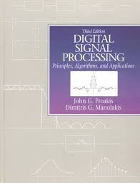
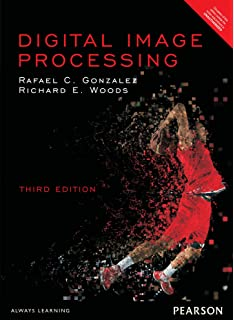
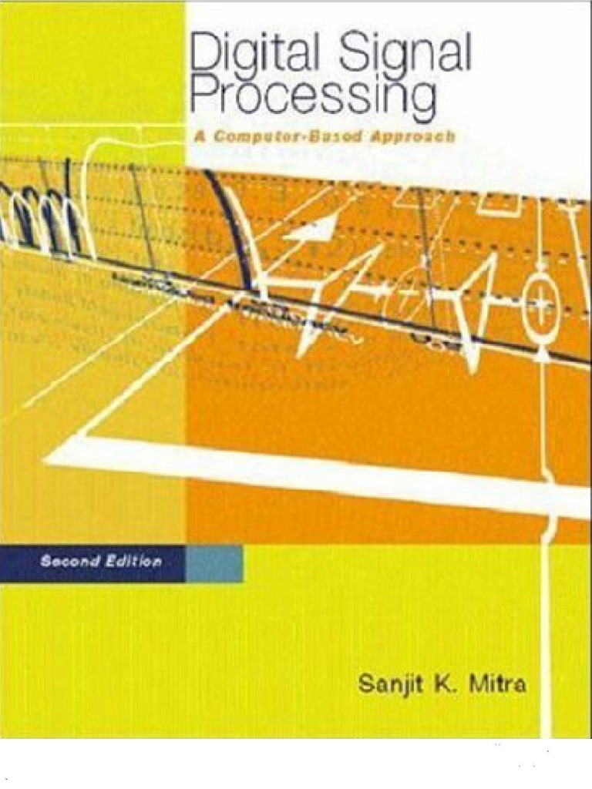
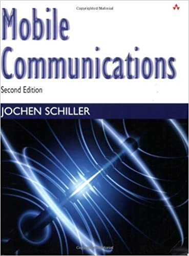
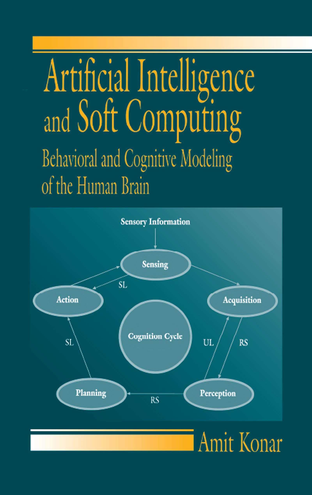
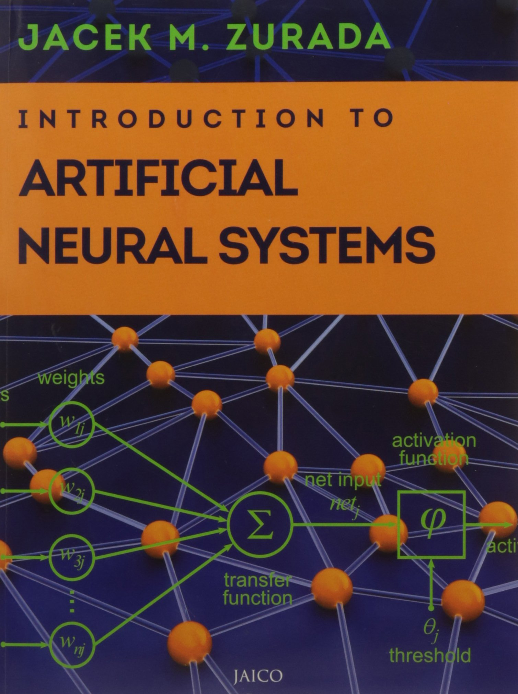

B.E COMPUTER
SEMESTER_VII
Subject :Digital Signal & Image Processing (code :CSC701)

Textbook
John G. Proakis, Dimitris and G.Manolakis, ‗Digital Signal Processing: Principles, Algorithms, and Applications‘ 3th Edition , Pearson Education

Textbook
Rafel C. Gonzalez and Richard E. Woods, ‗Digital Image Processing‘, Pearson Education Asia, 3rd Edition, 2009

Reference Book
Sanjit Mitra, ‗Digital Signal Processing: A Computer Based Approach‘, TataMcGraw Hill, 2nd Edition
Subject : Mobile Communication & Computing (Code:CSC702)

Textbook
Jochen Schilller,‖Mobile Communication ―, Addision wisely,Pearson Education
Textbook
Wireless Communications & Networks,‖ By William Stallings, Second Edition, Pearson Education
Reference Book
Andreas F.Molisch, ―Wireless Communications,‖ Second Edition, Wiley Publications.
Reference Book
Christopher Cox, ―An Introduction to LTE: LTE, LTE-Advanced, SAE and 4G Mobile Communications,‖ Wiley publications
Subject: Artificial Intelligence & Soft Computing (Code:CSC703)

Textbook
Artificial Intelligence and Soft Computing: Behavioral and Cognitive Modeling of the Human Brain
Reference book
J.-S.R.Jang "Neuro-Fuzzy and Soft Computing" PHI 2003.
